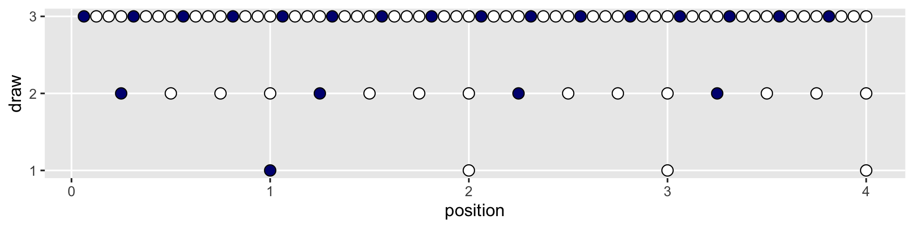
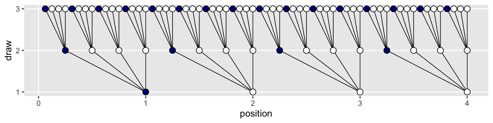
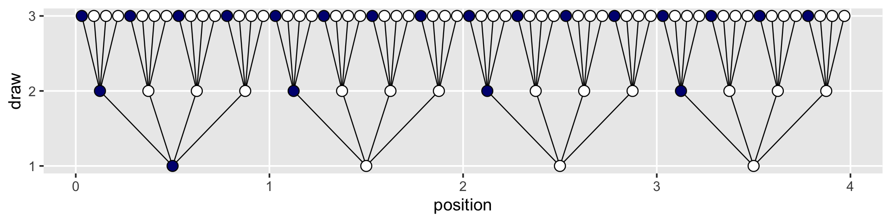
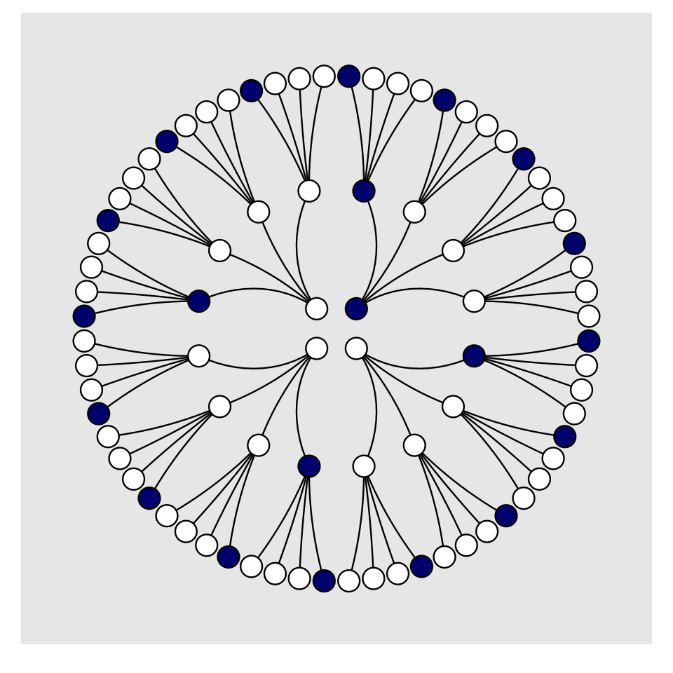
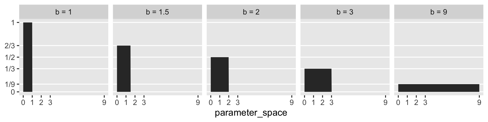
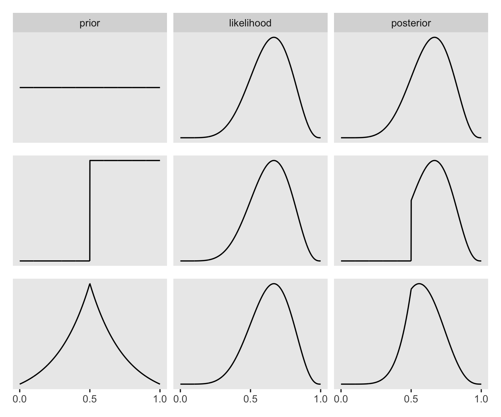

2 Small Worlds and Large Worlds
A while back The Oatmeal put together an infographic on Christopher Columbus. I’m no historian and cannot vouch for its accuracy, so make of it what you will.
McElreath described the thrust of this chapter this way:
In this chapter, you will begin to build Bayesian models. The way that Bayesian models learn from evidence is arguably optimal in the small world. When their assumptions approximate reality, they also perform well in the large world. But large world performance has to be demonstrated rather than logically deduced. (McElreath, 2020b, p. 20)
Indeed.
2.1 The garden of forking data
Gelman and Loken (2013) wrote a great paper of a similar name and topic. The titles from this section and Gelman and Loken’s paper have their origins in the short story by Jorge Luis Borges (1941), The garden of forking paths. You can find copies of the original short story here or here. Here’s a snip:
In all fictional works, each time a man is confronted with several alternatives, he chooses one and eliminates the others; in the fiction of Ts’ui Pên, he chooses–simultaneously–all of them. He creates, in this way, diverse futures, diverse times which themselves also proliferate and fork. The choices we make in our data analyses proliferate and fork in this way, too.
2.1.1 Counting possibilities.
Throughout this project, we’ll make extensive use packages from the tidyverse for data wrangling and plotting.
If you are new to tidyverse-style syntax, possibly the oddest component is the pipe (i.e., %>%). I’m not going to explain the %>% in this project, but you might learn more about in this brief clip, starting around minute 21:25 in this talk by Wickham, or in Section 5.6.1 from Grolemund and Wickham’s (2017) R for data science. Really, all of Chapter 5 of R4DS is just great for new R and new tidyverse users. And R4DS Chapter 3 is a nice introduction to plotting with ggplot2 (Wickham, 2016; Wickham et al., 2020).
Other than the pipe, the other big thing to be aware of is tibbles (Müller & Wickham, 2020). For our purposes, think of a tibble as a data object with two dimensions defined by rows and columns. Importantly, tibbles are just special types of data frames. So, whenever we talk about data frames, we’re usually talking about tibbles. For more on the topic, check out R4SD, Chapter 10.
If we’re willing to code the marbles as 0 = “white” 1 = “blue”, we can arrange the possibility data in a tibble as follows.
d <-
tibble(p1 = 0,
p2 = rep(1:0, times = c(1, 3)),
p3 = rep(1:0, times = c(2, 2)),
p4 = rep(1:0, times = c(3, 1)),
p5 = 1)
head(d)## # A tibble: 4 x 5
## p1 p2 p3 p4 p5
## <dbl> <int> <int> <int> <dbl>
## 1 0 1 1 1 1
## 2 0 0 1 1 1
## 3 0 0 0 1 1
## 4 0 0 0 0 1You might depict the possibility data in a plot.
d %>%
set_names(1:5) %>%
mutate(x = 1:4) %>%
pivot_longer(-x, names_to = "possibility") %>%
mutate(value = value %>% as.character()) %>%
ggplot(aes(x = x, y = possibility, fill = value)) +
geom_point(shape = 21, size = 5) +
scale_fill_manual(values = c("white", "navy")) +
scale_x_discrete(NULL, breaks = NULL) +
theme(legend.position = "none")As a quick aside, check out Suzan Baert’s blog post Data wrangling part 2: Transforming your columns into the right shape for an extensive discussion on dplyr::mutate() and tidyr::gather(). The tidyr::pivot_longer() function is an updated variant of gather(), which we’ll be making extensive use of throughout this project. If you’re new to reshaping data with pivoting, check out the vignettes here and here (Pivot Data from Wide to Long Pivot_longer, 2020; Pivoting, 2020).
Here’s the basic structure of the possibilities per marble draw.
| draw | marbles | possibilities |
|---|---|---|
| 1 | 4 | 4 |
| 2 | 4 | 16 |
| 3 | 4 | 64 |
If you walk that out a little, you can structure the data required to approach Figure 2.2.
(
d <-
tibble(position = c((1:4^1) / 4^0,
(1:4^2) / 4^1,
(1:4^3) / 4^2),
draw = rep(1:3, times = c(4^1, 4^2, 4^3)),
fill = rep(c("b", "w"), times = c(1, 3)) %>%
rep(., times = c(4^0 + 4^1 + 4^2)))
)## # A tibble: 84 x 3
## position draw fill
## <dbl> <int> <chr>
## 1 1 1 b
## 2 2 1 w
## 3 3 1 w
## 4 4 1 w
## 5 0.25 2 b
## 6 0.5 2 w
## 7 0.75 2 w
## 8 1 2 w
## 9 1.25 2 b
## 10 1.5 2 w
## # … with 74 more rowsSee what I did there with the parentheses? If you assign a value to an object in R (e.g., dog <- 1) and just hit return, nothing will immediately pop up in the console. You have to actually execute dog before R will return 1. But if you wrap the code within parentheses (e.g., (dog <- 1)), R will perform the assignment and return the value as if you had executed dog.
But we digress. Here’s the initial plot.
d %>%
ggplot(aes(x = position, y = draw, fill = fill)) +
geom_point(shape = 21, size = 3) +
scale_fill_manual(values = c("navy", "white")) +
scale_y_continuous(breaks = 1:3) +
theme(legend.position = "none",
panel.grid.minor = element_blank())
To my mind, the easiest way to connect the dots in the appropriate way is to make two auxiliary tibbles.
# these will connect the dots from the first and second draws
(
lines_1 <-
tibble(x = rep((1:4), each = 4),
xend = ((1:4^2) / 4),
y = 1,
yend = 2)
)## # A tibble: 16 x 4
## x xend y yend
## <int> <dbl> <dbl> <dbl>
## 1 1 0.25 1 2
## 2 1 0.5 1 2
## 3 1 0.75 1 2
## 4 1 1 1 2
## 5 2 1.25 1 2
## 6 2 1.5 1 2
## 7 2 1.75 1 2
## 8 2 2 1 2
## 9 3 2.25 1 2
## 10 3 2.5 1 2
## 11 3 2.75 1 2
## 12 3 3 1 2
## 13 4 3.25 1 2
## 14 4 3.5 1 2
## 15 4 3.75 1 2
## 16 4 4 1 2# these will connect the dots from the second and third draws
(
lines_2 <-
tibble(x = rep(((1:4^2) / 4), each = 4),
xend = (1:4^3) / (4^2),
y = 2,
yend = 3)
)## # A tibble: 64 x 4
## x xend y yend
## <dbl> <dbl> <dbl> <dbl>
## 1 0.25 0.0625 2 3
## 2 0.25 0.125 2 3
## 3 0.25 0.188 2 3
## 4 0.25 0.25 2 3
## 5 0.5 0.312 2 3
## 6 0.5 0.375 2 3
## 7 0.5 0.438 2 3
## 8 0.5 0.5 2 3
## 9 0.75 0.562 2 3
## 10 0.75 0.625 2 3
## # … with 54 more rowsWe can use the lines_1 and lines_2 data in the plot with two geom_segment() functions.
d %>%
ggplot(aes(x = position, y = draw)) +
geom_segment(data = lines_1,
aes(x = x, xend = xend,
y = y, yend = yend),
size = 1/3) +
geom_segment(data = lines_2,
aes(x = x, xend = xend,
y = y, yend = yend),
size = 1/3) +
geom_point(aes(fill = fill),
shape = 21, size = 3) +
scale_fill_manual(values = c("navy", "white")) +
scale_y_continuous(breaks = 1:3) +
theme(legend.position = "none",
panel.grid.minor = element_blank())
We’ve generated the values for position (i.e., the \(x\)-axis), in such a way that they’re all justified to the right, so to speak. But we’d like to center them. For draw == 1, we’ll need to subtract 0.5 from each. For draw == 2, we need to reduce the scale by a factor of 4 and we’ll then need to reduce the scale by another factor of 4 for draw == 3. The ifelse() function will be of use for that.
d <-
d %>%
mutate(denominator = ifelse(draw == 1, .5,
ifelse(draw == 2, .5 / 4,
.5 / 4^2))) %>%
mutate(position = position - denominator)
d## # A tibble: 84 x 4
## position draw fill denominator
## <dbl> <int> <chr> <dbl>
## 1 0.5 1 b 0.5
## 2 1.5 1 w 0.5
## 3 2.5 1 w 0.5
## 4 3.5 1 w 0.5
## 5 0.125 2 b 0.125
## 6 0.375 2 w 0.125
## 7 0.625 2 w 0.125
## 8 0.875 2 w 0.125
## 9 1.12 2 b 0.125
## 10 1.38 2 w 0.125
## # … with 74 more rowsWe’ll follow the same logic for the lines_1 and lines_2 data.
## # A tibble: 16 x 4
## x xend y yend
## <dbl> <dbl> <dbl> <dbl>
## 1 0.5 0.125 1 2
## 2 0.5 0.375 1 2
## 3 0.5 0.625 1 2
## 4 0.5 0.875 1 2
## 5 1.5 1.12 1 2
## 6 1.5 1.38 1 2
## 7 1.5 1.62 1 2
## 8 1.5 1.88 1 2
## 9 2.5 2.12 1 2
## 10 2.5 2.38 1 2
## 11 2.5 2.62 1 2
## 12 2.5 2.88 1 2
## 13 3.5 3.12 1 2
## 14 3.5 3.38 1 2
## 15 3.5 3.62 1 2
## 16 3.5 3.88 1 2## # A tibble: 64 x 4
## x xend y yend
## <dbl> <dbl> <dbl> <dbl>
## 1 0.125 0.0312 2 3
## 2 0.125 0.0938 2 3
## 3 0.125 0.156 2 3
## 4 0.125 0.219 2 3
## 5 0.375 0.281 2 3
## 6 0.375 0.344 2 3
## 7 0.375 0.406 2 3
## 8 0.375 0.469 2 3
## 9 0.625 0.531 2 3
## 10 0.625 0.594 2 3
## # … with 54 more rowsNow the plot’s looking closer.
d %>%
ggplot(aes(x = position, y = draw)) +
geom_segment(data = lines_1,
aes(x = x, xend = xend,
y = y, yend = yend),
size = 1/3) +
geom_segment(data = lines_2,
aes(x = x, xend = xend,
y = y, yend = yend),
size = 1/3) +
geom_point(aes(fill = fill),
shape = 21, size = 3) +
scale_fill_manual(values = c("navy", "white")) +
scale_y_continuous(breaks = 1:3) +
theme(legend.position = "none",
panel.grid.minor = element_blank())
For the final step, we’ll use coord_polar() to change the coordinate system, giving the plot a mandala-like feel.
d %>%
ggplot(aes(x = position, y = draw)) +
geom_segment(data = lines_1,
aes(x = x, xend = xend,
y = y, yend = yend),
size = 1/3) +
geom_segment(data = lines_2,
aes(x = x, xend = xend,
y = y, yend = yend),
size = 1/3) +
geom_point(aes(fill = fill),
shape = 21, size = 4) +
scale_fill_manual(values = c("navy", "white")) +
scale_x_continuous(NULL, limits = c(0, 4), breaks = NULL) +
scale_y_continuous(NULL, limits = c(0.75, 3), breaks = NULL) +
coord_polar() +
theme(legend.position = "none",
panel.grid = element_blank())
To make our version of Figure 2.3, we’ll have to add an index to tell us which paths remain logically valid after each choice. We’ll call the index remain.
lines_1 <-
lines_1 %>%
mutate(remain = c(rep(0:1, times = c(1, 3)),
rep(0, times = 4 * 3)))
lines_2 <-
lines_2 %>%
mutate(remain = c(rep(0, times = 4),
rep(1:0, times = c(1, 3)) %>% rep(., times = 3),
rep(0, times = 12 * 4)))
d <-
d %>%
mutate(remain = c(rep(1:0, times = c(1, 3)),
rep(0:1, times = c(1, 3)),
rep(0, times = 4 * 4),
rep(1:0, times = c(1, 3)) %>% rep(., times = 3),
rep(0, times = 12 * 4)))
# finally, the plot:
d %>%
ggplot(aes(x = position, y = draw)) +
geom_segment(data = lines_1,
aes(x = x, xend = xend,
y = y, yend = yend,
alpha = remain %>% as.character()),
size = 1/3) +
geom_segment(data = lines_2,
aes(x = x, xend = xend,
y = y, yend = yend,
alpha = remain %>% as.character()),
size = 1/3) +
geom_point(aes(fill = fill, alpha = remain %>% as.character()),
shape = 21, size = 4) +
# it's the alpha parameter that makes elements semitransparent
scale_fill_manual(values = c("navy", "white")) +
scale_alpha_manual(values = c(1/5, 1)) +
scale_x_continuous(NULL, limits = c(0, 4), breaks = NULL) +
scale_y_continuous(NULL, limits = c(0.75, 3), breaks = NULL) +
coord_polar() +
theme(legend.position = "none",
panel.grid = element_blank())Letting “w” = a white dot and “b” = a blue dot, we might recreate the table in the middle of page 23 like so.
# if we make two custom functions, here, it will simplify the code within `mutate()`, below
n_blue <- function(x) {
rowSums(x == "b")
}
n_white <- function(x) {
rowSums(x == "w")
}
t <-
# for the first four columns, `p_` indexes position
tibble(p_1 = rep(c("w", "b"), times = c(1, 4)),
p_2 = rep(c("w", "b"), times = c(2, 3)),
p_3 = rep(c("w", "b"), times = c(3, 2)),
p_4 = rep(c("w", "b"), times = c(4, 1))) %>%
mutate(`draw 1: blue` = n_blue(.),
`draw 2: white` = n_white(.),
`draw 3: blue` = n_blue(.)) %>%
mutate(`ways to produce` = `draw 1: blue` * `draw 2: white` * `draw 3: blue`)
t %>%
knitr::kable()| p_1 | p_2 | p_3 | p_4 | draw 1: blue | draw 2: white | draw 3: blue | ways to produce |
|---|---|---|---|---|---|---|---|
| w | w | w | w | 0 | 4 | 0 | 0 |
| b | w | w | w | 1 | 3 | 1 | 3 |
| b | b | w | w | 2 | 2 | 2 | 8 |
| b | b | b | w | 3 | 1 | 3 | 9 |
| b | b | b | b | 4 | 0 | 4 | 0 |
We’ll need new data for Figure 2.4. Here’s the initial primary data, d.
d <-
tibble(position = c((1:4^1) / 4^0,
(1:4^2) / 4^1,
(1:4^3) / 4^2),
draw = rep(1:3, times = c(4^1, 4^2, 4^3)))
(
d <-
d %>%
bind_rows(
d, d
) %>%
# here are the fill colors
mutate(fill = c(rep(c("w", "b"), times = c(1, 3)) %>% rep(., times = c(4^0 + 4^1 + 4^2)),
rep(c("w", "b"), each = 2) %>% rep(., times = c(4^0 + 4^1 + 4^2)),
rep(c("w", "b"), times = c(3, 1)) %>% rep(., times = c(4^0 + 4^1 + 4^2)))) %>%
# now we need to shift the positions over in accordance with draw, like before
mutate(denominator = ifelse(draw == 1, .5,
ifelse(draw == 2, .5 / 4,
.5 / 4^2))) %>%
mutate(position = position - denominator) %>%
# here we'll add an index for which pie wedge we're working with
mutate(pie_index = rep(letters[1:3], each = n()/3)) %>%
# to get the position axis correct for pie_index == "b" or "c", we'll need to offset
mutate(position = ifelse(pie_index == "a", position,
ifelse(pie_index == "b", position + 4,
position + 4 * 2)))
)## # A tibble: 252 x 5
## position draw fill denominator pie_index
## <dbl> <int> <chr> <dbl> <chr>
## 1 0.5 1 w 0.5 a
## 2 1.5 1 b 0.5 a
## 3 2.5 1 b 0.5 a
## 4 3.5 1 b 0.5 a
## 5 0.125 2 w 0.125 a
## 6 0.375 2 b 0.125 a
## 7 0.625 2 b 0.125 a
## 8 0.875 2 b 0.125 a
## 9 1.12 2 w 0.125 a
## 10 1.38 2 b 0.125 a
## # … with 242 more rowsBoth lines_1 and lines_2 require adjustments for x and xend. Our current approach is a nested ifelse(). Rather than copy and paste that multi-line ifelse() code for all four, let’s wrap it in a compact function, which we’ll call move_over().
move_over <- function(position, index) {
ifelse(
index == "a", position,
ifelse(
index == "b", position + 4, position + 4 * 2
)
)
}If you’re new to making your own R functions, check out Chapter 19 of R4DS or Chapter 14 of R programming for data science (Peng, 2019).
Anyway, now we’ll make our new lines_1 and lines_2 data, for which we’ll use move_over() to adjust their x and xend positions to the correct spots.
(
lines_1 <-
tibble(x = rep((1:4), each = 4) %>% rep(., times = 3),
xend = ((1:4^2) / 4) %>% rep(., times = 3),
y = 1,
yend = 2) %>%
mutate(x = x - .5,
xend = xend - .5 / 4^1) %>%
# here we'll add an index for which pie wedge we're working with
mutate(pie_index = rep(letters[1:3], each = n()/3)) %>%
# to get the position axis correct for `pie_index == "b"` or `"c"`, we'll need to offset
mutate(x = move_over(position = x, index = pie_index),
xend = move_over(position = xend, index = pie_index))
)## # A tibble: 48 x 5
## x xend y yend pie_index
## <dbl> <dbl> <dbl> <dbl> <chr>
## 1 0.5 0.125 1 2 a
## 2 0.5 0.375 1 2 a
## 3 0.5 0.625 1 2 a
## 4 0.5 0.875 1 2 a
## 5 1.5 1.12 1 2 a
## 6 1.5 1.38 1 2 a
## 7 1.5 1.62 1 2 a
## 8 1.5 1.88 1 2 a
## 9 2.5 2.12 1 2 a
## 10 2.5 2.38 1 2 a
## # … with 38 more rows(
lines_2 <-
tibble(x = rep(((1:4^2) / 4), each = 4) %>% rep(., times = 3),
xend = (1:4^3 / 4^2) %>% rep(., times = 3),
y = 2,
yend = 3) %>%
mutate(x = x - .5 / 4^1,
xend = xend - .5 / 4^2) %>%
# here we'll add an index for which pie wedge we're working with
mutate(pie_index = rep(letters[1:3], each = n()/3)) %>%
# to get the position axis correct for `pie_index == "b"` or `"c"`, we'll need to offset
mutate(x = move_over(position = x, index = pie_index),
xend = move_over(position = xend, index = pie_index))
)## # A tibble: 192 x 5
## x xend y yend pie_index
## <dbl> <dbl> <dbl> <dbl> <chr>
## 1 0.125 0.0312 2 3 a
## 2 0.125 0.0938 2 3 a
## 3 0.125 0.156 2 3 a
## 4 0.125 0.219 2 3 a
## 5 0.375 0.281 2 3 a
## 6 0.375 0.344 2 3 a
## 7 0.375 0.406 2 3 a
## 8 0.375 0.469 2 3 a
## 9 0.625 0.531 2 3 a
## 10 0.625 0.594 2 3 a
## # … with 182 more rowsFor the last data wrangling step, we add the remain indices to help us determine which parts to make semitransparent. I’m not sure of a slick way to do this, so these are the result of brute force counting.
d <-
d %>%
mutate(remain = c(#pie_index == "a"
rep(0:1, times = c(1, 3)),
rep(0, times = 4),
rep(1:0, times = c(1, 3)) %>% rep(., times = 3),
rep(0, times = 4 * 4),
rep(c(0, 1, 0), times = c(1, 3, 4 * 3)) %>% rep(., times = 3),
# pie_index == "b"
rep(0:1, each = 2),
rep(0, times = 4 * 2),
rep(1:0, each = 2) %>% rep(., times = 2),
rep(0, times = 4 * 4 * 2),
rep(c(0, 1, 0, 1, 0), times = c(2, 2, 2, 2, 8)) %>% rep(., times = 2),
# pie_index == "c",
rep(0:1, times = c(3, 1)),
rep(0, times = 4 * 3),
rep(1:0, times = c(3, 1)),
rep(0, times = 4 * 4 * 3),
rep(0:1, times = c(3, 1)) %>% rep(., times = 3),
rep(0, times = 4)
)
)
lines_1 <-
lines_1 %>%
mutate(remain = c(rep(0, times = 4),
rep(1:0, times = c(1, 3)) %>% rep(., times = 3),
rep(0, times = 4 * 2),
rep(1:0, each = 2) %>% rep(., times = 2),
rep(0, times = 4 * 3),
rep(1:0, times = c(3, 1))
)
)
lines_2 <-
lines_2 %>%
mutate(remain = c(rep(0, times = 4 * 4),
rep(c(0, 1, 0), times = c(1, 3, 4 * 3)) %>% rep(., times = 3),
rep(0, times = 4 * 8),
rep(c(0, 1, 0, 1, 0), times = c(2, 2, 2, 2, 8)) %>% rep(., times = 2),
rep(0, times = 4 * 4 * 3),
rep(0:1, times = c(3, 1)) %>% rep(., times = 3),
rep(0, times = 4)
)
)We’re finally ready to plot our Figure 2.4.
d %>%
ggplot(aes(x = position, y = draw)) +
geom_vline(xintercept = c(0, 4, 8), color = "white", size = 2/3) +
geom_segment(data = lines_1,
aes(x = x, xend = xend,
y = y, yend = yend,
alpha = remain %>% as.character()),
size = 1/3) +
geom_segment(data = lines_2,
aes(x = x, xend = xend,
y = y, yend = yend,
alpha = remain %>% as.character()),
size = 1/3) +
geom_point(aes(fill = fill, size = draw, alpha = remain %>% as.character()),
shape = 21) +
scale_fill_manual(values = c("navy", "white")) +
scale_size_continuous(range = c(3, 1.5)) +
scale_alpha_manual(values = c(0.2, 1)) +
scale_x_continuous(NULL, limits = c(0, 12), breaks = NULL) +
scale_y_continuous(NULL, limits = c(0.75, 3.5), breaks = NULL) +
coord_polar() +
theme(legend.position = "none",
panel.grid = element_blank())2.1.2 Combining other information.
We may have additional information about the relative plausibility of each conjecture. This information could arise from knowledge of how the contents of the bag were generated. It could also arise from previous data. Whatever the source, it would help to have a way to combine different sources of information to update the plausibilities. Luckily there is a natural solution: Just multiply the counts. (p. 25)
Here’s a quick version of the table in the middle of page 25.
t <-
t %>%
rename(`previous counts` = `ways to produce`,
`ways to produce` = `draw 1: blue`) %>%
select(p_1:p_4, `ways to produce`, `previous counts`) %>%
mutate(`new count` = `ways to produce` * `previous counts`)
t %>%
knitr::kable()| p_1 | p_2 | p_3 | p_4 | ways to produce | previous counts | new count |
|---|---|---|---|---|---|---|
| w | w | w | w | 0 | 0 | 0 |
| b | w | w | w | 1 | 3 | 3 |
| b | b | w | w | 2 | 8 | 16 |
| b | b | b | w | 3 | 9 | 27 |
| b | b | b | b | 4 | 0 | 0 |
We might update to reproduce the table a the top of page 26, like this.
t <-
t %>%
select(p_1:p_4, `new count`) %>%
rename(`prior count` = `new count`) %>%
mutate(`factory count` = c(0, 3:0)) %>%
mutate(`new count` = `prior count` * `factory count`)
t %>%
knitr::kable()| p_1 | p_2 | p_3 | p_4 | prior count | factory count | new count |
|---|---|---|---|---|---|---|
| w | w | w | w | 0 | 0 | 0 |
| b | w | w | w | 3 | 3 | 9 |
| b | b | w | w | 16 | 2 | 32 |
| b | b | b | w | 27 | 1 | 27 |
| b | b | b | b | 0 | 0 | 0 |
To learn more about dplyr::select() and dplyr::rename(), check out Baert’s exhaustive blog post, Data wrangling part 1: Basic to advanced ways to select columns.
2.1.2.1 Rethinking: Original ignorance.
Which assumption should we use, when there is no previous infor- mation about the conjectures? The most common solution is to assign an equal number of ways that each conjecture could be correct, before seeing any data. This is sometimes known as the principle of indifference: When there is no reason to say that one conjecture is more plausible than another, weigh all of the conjectures equally. This book does not use nor endorse “ignorance” priors. As we’ll see in later chapters, the structure of the model and the scientific context always provide information that allows us to do better than ignorance. (p. 26, emphasis in the original)
2.1.3 From counts to probability.
The opening sentences in this subsection are important: “It is helpful to think of this strategy as adhering to a principle of honest ignorance: When we don’t know what caused the data, potential causes that may produce the data in more ways are more plausible” (p. 26, emphasis in the original).
We can define our updated plausibility as
plausibility of  after seeing
after seeing 
\(\propto\)
ways can produce
\(\times\)
prior plausibility of .
In other words,
plausibility of \(p\) after \(D_\text{new}\) \(\propto\) ways \(p\) can produce \(D_\text{new} \times\) prior plausibility of \(p\).
But since we have to standardize the results to get them into a probability metric, the full equation is
\[\text{plausibility of } p \text{ after } D_\text{new} = \frac{\text{ ways } p \text{ can produce } D_\text{new} \times \text{ prior plausibility of } p}{\text{sum of the products}}.\]
You might make a version of the table in the middle of page 27 like this.
t %>%
select(p_1:p_4) %>%
mutate(p = seq(from = 0, to = 1, by = .25),
`ways to produce data` = c(0, 3, 8, 9, 0)) %>%
mutate(plausibility = `ways to produce data` / sum(`ways to produce data`))## # A tibble: 5 x 7
## p_1 p_2 p_3 p_4 p `ways to produce data` plausibility
## <chr> <chr> <chr> <chr> <dbl> <dbl> <dbl>
## 1 w w w w 0 0 0
## 2 b w w w 0.25 3 0.15
## 3 b b w w 0.5 8 0.4
## 4 b b b w 0.75 9 0.45
## 5 b b b b 1 0 0We just computed the plausibilities, but here’s McElreath’s R code 2.1.
## [1] 0.00 0.15 0.40 0.45 0.002.2 Building a model
We might save our globe-tossing data in a tibble.
## # A tibble: 9 x 1
## toss
## <chr>
## 1 w
## 2 l
## 3 w
## 4 w
## 5 w
## 6 l
## 7 w
## 8 l
## 9 w2.2.1 A data story.
Bayesian data analysis usually means producing a story for how the data came to be. This story may be descriptive, specifying associations that can be used to predict outcomes, given observations. Or it may be causal, a theory of how some events produce other events. Typically, any story you intend to be causal may also be descriptive. But many descriptive stories are hard to interpret causally. But all data stories are complete, in the sense that they are sufficient for specifying an algorithm for simulating new data. (p. 28, emphasis in the original)
2.2.2 Bayesian updating.
Here we’ll add the cumulative number of trials, n_trials, and the cumulative number of successes, n_successes (i.e., toss == "w"), to the data.
## # A tibble: 9 x 3
## toss n_trials n_success
## <chr> <int> <int>
## 1 w 1 1
## 2 l 2 1
## 3 w 3 2
## 4 w 4 3
## 5 w 5 4
## 6 l 6 4
## 7 w 7 5
## 8 l 8 5
## 9 w 9 6Fair warning: We don’t learn the skills for making Figure 2.5 until later in the chapter. So consider the data wrangling steps in this section as something of a preview.
sequence_length <- 50
d %>%
expand(nesting(n_trials, toss, n_success),
p_water = seq(from = 0, to = 1, length.out = sequence_length)) %>%
group_by(p_water) %>%
# you can learn more about lagging here: https://www.rdocumentation.org/packages/stats/versions/3.5.1/topics/lag or here: https://dplyr.tidyverse.org/reference/lead-lag.html
mutate(lagged_n_trials = lag(n_trials, k = 1),
lagged_n_success = lag(n_success, k = 1)) %>%
ungroup() %>%
mutate(prior = ifelse(n_trials == 1, .5,
dbinom(x = lagged_n_success,
size = lagged_n_trials,
prob = p_water)),
likelihood = dbinom(x = n_success,
size = n_trials,
prob = p_water),
strip = str_c("n = ", n_trials)) %>%
# the next three lines allow us to normalize the prior and the likelihood,
# putting them both in a probability metric
group_by(n_trials) %>%
mutate(prior = prior / sum(prior),
likelihood = likelihood / sum(likelihood)) %>%
# plot!
ggplot(aes(x = p_water)) +
geom_line(aes(y = prior),
linetype = 2) +
geom_line(aes(y = likelihood)) +
scale_x_continuous("proportion water", breaks = c(0, .5, 1)) +
scale_y_continuous("plausibility", breaks = NULL) +
theme(panel.grid = element_blank()) +
facet_wrap(~strip, scales = "free_y")
If it wasn’t clear in the code, the dashed curves are normalized prior densities. The solid ones are normalized likelihoods. If you don’t normalize (i.e., divide the density by the sum of the density), their respective heights don’t match up with those in the text. Furthermore, it’s the normalization that makes them directly comparable.
To learn more about dplyr::group_by() and its opposite dplyr::ungroup(), check out R4DS, Chapter 5. To learn about tidyr::expand(), go here.
2.2.2.1 Rethinking: Sample size and reliable inference.
It is common to hear that there is a minimum num- ber of observations for a useful statistical estimate. For example, there is a widespread superstition that 30 observations are needed before one can use a Gaussian distribution. Why? In non-Bayesian statistical inference, procedures are often justified by the method’s behavior at very large sample sizes, so-called asymptotic behavior. As a result, performance at small samples sizes is questionable.
In contrast, Bayesian estimates are valid for any sample size. This does not mean that more data isn’t helpful–it certainly is. Rather, the estimates have a clear and valid interpretation, no matter the sample size. But the price for this power is dependency upon the initial plausibilities, the prior. If the prior is a bad one, then the resulting inference will be misleading. There’s no free lunch,44 when it comes to learning about the world. (p. 31, emphasis in the original)
2.2.3 Evaluate.
The Bayesian model learns in a way that is demonstrably optimal, provided that it accurately describes the real, large world. This is to say that your Bayesian machine guarantees perfect inference within the small world. No other way of using the available information, beginning with the same state of information, could do better.
Don’t get too excited about this logical virtue, however. The calculations may malfunction, so results always have to be checked. And if there are important differences between the model and reality, then there is no logical guarantee of large world performance. And even if the two worlds did match, any particular sample of data could still be misleading. (p. 31)
2.2.3.1 Rethinking: Deflationary statistics.
It may be that Bayesian inference is the best general purpose method of inference known. However, Bayesian inference is much less powerful than we’d like it to be. There is no approach to inference that provides universal guarantees. No branch of applied mathematics has unfettered access to reality, because math is not discovered, like the proton. Instead it is invented, like the shovel. (p. 32)
2.3 Components of the model
We can sum up the components of the model as three things:
- a likelihood function: “the number of ways each conjecture could produce an observation,”
- one or more parameters: “the accumulated number of ways each conjecture cold produce the entire data,” and
- a prior: “the initial plausibility of each conjectured cause of the data” (p. 32).
2.3.1 Variables.
Variables are just symbols that can take on different values. In a scientific context, variables include things we wish to infer, such as proportions and rates, as well as things we might observe, the data….
Unobserved variables are usually called parameters. (p. 32, emphasis in the original)
2.3.2 Definitions.
Once we have the variables listed, we then have to define each of them. In defining each, we build a model that relates the variables to one another. Remember, the goal is to count all the ways the data could arise, given the assumptions. (p. 33)
2.3.2.1 Observed variables.
So that we don’t have to literally count, we can use a mathematical function that tells us the right plausibility. In conventional statistics, a distribution function assigned to an observed variable is usually called a likelihood. (p. 33, emphasis in the original)
If you let the count of water be \(w\) and the count of land be \(l\), then the binomial likelihood for the globe-tossing data may be expressed as
\[\operatorname{Pr} (w, l| p) = \frac{(w + l)!}{w!l!} p^w (1 - p)^l.\]
As McElreath wrote, we can read that as: "The counts of ‘water’ W and ‘land’ L are distributed binomially, with probability \(p\) of ‘water’ on each toss. (p. 33, emphasis in the original). Given a probability of .5, we can use the dbinom() function to determine the likelihood of 6 out of 9 tosses coming out water.
## [1] 0.1640625McElreath suggested we change the values of prob. Here is a way to do so over the parameter space, \([0, 1]\).
tibble(prob = seq(from = 0, to = 1, by = .01)) %>%
ggplot(aes(x = prob, y = dbinom(x = 6, size = 9, prob = prob))) +
geom_line() +
labs(x = "probability",
y = "binomial likelihood") +
theme(panel.grid = element_blank())
2.3.2.2 Unobserved variables.
The distributions we assign to the observed variables typically have their own variables. In the binomial above, there is \(p\), the probability of sampling water. Since \(p\) is not observed, we usually call it a parameter. Even though we cannot observe \(p\), we still have to define it. (p. 34)
2.3.2.3 Overthinking: Prior as a probability distribution
McElreath said that “for a uniform prior from \(a\) to \(b\), the probability of any point in the interval is \(1 / (b - a)\)” (p. 35). Let’s try that out. To keep things simple, we’ll hold \(a\) constant while varying the values for \(b\).
## # A tibble: 5 x 3
## a b prob
## <dbl> <dbl> <dbl>
## 1 0 1 1
## 2 0 1.5 0.667
## 3 0 2 0.5
## 4 0 3 0.333
## 5 0 9 0.111I like to verify things with plots.
tibble(a = 0,
b = c(1, 1.5, 2, 3, 9)) %>%
expand(nesting(a, b), parameter_space = seq(from = 0, to = 9, length.out = 500)) %>%
mutate(prob = dunif(parameter_space, a, b),
b = str_c("b = ", b)) %>%
ggplot(aes(x = parameter_space, ymin = 0, ymax = prob)) +
geom_ribbon() +
scale_x_continuous(breaks = c(0, 1:3, 9)) +
scale_y_continuous(breaks = c(0, 1/9, 1/3, 1/2, 2/3, 1),
labels = c("0", "1/9", "1/3", "1/2", "2/3", "1")) +
theme(panel.grid.minor = element_blank(),
panel.grid.major.x = element_blank()) +
facet_wrap(~b, ncol = 5)
As we’ll learn much later in the project, the \(\operatorname{Uniform} (0, 1)\) distribution is special in that we can also express it as the beta distribution for which \(\alpha = 1 \text{ and } \beta = 1\). E.g.,
tibble(parameter_space = seq(from = 0, to = 1, length.out = 50)) %>%
mutate(prob = dbeta(parameter_space, 1, 1)) %>%
ggplot(aes(x = parameter_space, ymin = 0, ymax = prob)) +
geom_ribbon() +
scale_y_continuous("density", limits = c(0, 2)) +
ggtitle(expression("This is beta"*(1*", "*1))) +
theme(panel.grid = element_blank())2.3.2.4 Rethinking: Datum or parameter?
It is typical to conceive of data and parameters as completely different kinds of entities. Data are measured and known; parameters are unknown and must be estimated from data. Usefully, in the Bayesian framework the distinction between a datum and a parameter is not so fundamental. (p. 35)
For more in this topic, check out McElreath’s lecture, Understanding Bayesian statistics without frequentist language.
2.3.3 A model is born.
We can now describe our observed variables, \(w\) and \(l\), with parameters within the binomial likelihood, our shorthand notation for which is
\[w \sim \operatorname{Binomial} (n, p),\]
where \(n = w + l\). Our binomial likelihood contains a parameter for an unobserved variable, \(p\). Parameters in Bayesian models are assigned priors and we can report our prior for \(p\) as
\[p \sim \operatorname{Uniform} (0, 1),\]
which expresses the model assumption that the entire range of possible values for \(p\), \([0, 1\), are equally plausible.
2.4 Making the model go
For every unique combination of data, likelihood, parameters, and prior, there is a unique posterior distribution. This distribution contains the relative plausibility of different parameter values, conditional on the data and model. The posterior distribution takes the form of the probability of the parameters, conditional on the data. (p. 36, emphasis added)
2.4.1 Bayes’ theorem.
We already know about our values for \(w\), \(l\), and, by logical necessity, \(n\). Bayes’ theorem will allow us to determine the plausability of various values of \(p\), given \(w\) and \(l\), which we can express formally as \(\operatorname{Pr} (p | w, l)\). Building on some of the earlier equations on page 37, Bayes’ theorem tells us that
\[\operatorname{Pr} (p | w, l) = \frac{\operatorname{Pr} (w, l | p) \operatorname{Pr} (p )}{\operatorname{Pr} (w, l)}.\]
And this is Bayes’ theorem. It says that the probability of any particular value of \(p\), considering the data, is equal to the product of the relative plausibility of the data, conditional on \(p\), and the prior plausibility of \(p\), divided by this thing Pr(W, L), which I’ll call the average probability of the data. (p. 37, emphasis in the original)
We can express this in words as
\[\text{Posterior} = \frac{\text{Probability of the data} \times \text{Prior}}{\text{Average probability of the data}}.\]
The average probability of the data is often called the “evidence” or the “average likelihood” and we’ll get a sense of what that means as we go along. “The key lesson is that the posterior is proportional to the product of the prior and the probability of the data” (p. 37). Figure 2.6 will help us see what this means. Here are the preparatory steps for the data.
sequence_length <- 1e3
d <-
tibble(probability = seq(from = 0, to = 1, length.out = sequence_length)) %>%
expand(probability, row = c("flat", "stepped", "Laplace")) %>%
arrange(row, probability) %>%
mutate(prior = ifelse(row == "flat", 1,
ifelse(row == "stepped", rep(0:1, each = sequence_length / 2),
exp(-abs(probability - 0.5) / .25) / ( 2 * 0.25))),
likelihood = dbinom(x = 6, size = 9, prob = probability)) %>%
group_by(row) %>%
mutate(posterior = prior * likelihood / sum(prior * likelihood)) %>%
pivot_longer(prior:posterior) %>%
ungroup() %>%
mutate(name = factor(name, levels = c("prior", "likelihood", "posterior")),
row = factor(row, levels = c("flat", "stepped", "Laplace")))To learn more about dplyr::arrange(), chech out R4DS, Chapter 5.3.
In order to avoid unnecessary facet labels for the rows, it was easier to just make each column of the plot separately. We can then use the elegant and powerful syntax from Thomas Lin Pedersen’s (2019) patchwork package to combine them.
p1 <-
d %>%
filter(row == "flat") %>%
ggplot(aes(x = probability, y = value)) +
geom_line() +
scale_x_continuous(NULL, breaks = NULL) +
scale_y_continuous(NULL, breaks = NULL) +
theme(panel.grid = element_blank()) +
facet_wrap(~name, scales = "free_y")
p2 <-
d %>%
filter(row == "stepped") %>%
ggplot(aes(x = probability, y = value)) +
geom_line() +
scale_x_continuous(NULL, breaks = NULL) +
scale_y_continuous(NULL, breaks = NULL) +
theme(panel.grid = element_blank(),
strip.background = element_blank(),
strip.text = element_blank()) +
facet_wrap(~name, scales = "free_y")
p3 <-
d %>%
filter(row == "Laplace") %>%
ggplot(aes(x = probability, y = value)) +
geom_line() +
scale_x_continuous(NULL, breaks = c(0, .5, 1)) +
scale_y_continuous(NULL, breaks = NULL) +
theme(panel.grid = element_blank(),
strip.background = element_blank(),
strip.text = element_blank()) +
facet_wrap(~name, scales = "free_y")
library(patchwork)
p1 / p2 / p3
I’m not sure if it’s the same McElreath used in the text, but the formula I used for the triangle-shaped prior is the Laplace distribution with a location of 0.5 and a dispersion of 0.25.
Also, to learn all about dplyr::filter(), check out Baert’s Data wrangling part 3: Basic and more advanced ways to filter rows.
2.4.2 Motors.
Various numerical techniques are needed to approximate the mathematics that follows from the definition of Bayes’ theorem. In this book, you’ll meet three different conditioning engines, numerical techniques for computing posterior distributions:
- Grid approximation
- Quadratic approximation
- Markov chain Monte Carlo (MCMC)
There are many other engines, and new ones are being invented all the time. But the three you’ll get to know here are common and widely useful. (p. 39)
In this translation of McElreath’s text, we will get a little practice with grid approximation and the quadratic approximation. But since our aim is to practice with brms, we’ll jump rather quickly into MCMC. This will be awkward at times because it will force us to contend with technical issues in earlier problems in the text than McElreath originally did. I’ll do what I can to bridge the pedagogical gaps.
2.4.3 Grid approximation.
Continuing on with our globe-tossing example,
at any particular value of a parameter, \(p'\) , it’s a simple matter to compute the posterior probability: just multiply the prior probability of \(p'\) by the likelihood at \(p'\). Repeating this procedure for each value in the grid generates an approximate picture of the exact posterior distribution. This procedure is called grid approximation. (pp. 39–40, emphasis in the original)
We just employed grid approximation over the last figure. To get nice smooth lines, we computed the posterior over 1000 evenly-spaced points on the probability space. Here we’ll prepare for Figure 2.7 with 20.
(
d <-
tibble(p_grid = seq(from = 0, to = 1, length.out = 20), # define grid
prior = 1) %>% # define prior
mutate(likelihood = dbinom(6, size = 9, prob = p_grid)) %>% # compute likelihood at each value in grid
mutate(unstd_posterior = likelihood * prior) %>% # compute product of likelihood and prior
mutate(posterior = unstd_posterior / sum(unstd_posterior)) # standardize the posterior, so it sums to 1
)## # A tibble: 20 x 5
## p_grid prior likelihood unstd_posterior posterior
## <dbl> <dbl> <dbl> <dbl> <dbl>
## 1 0 1 0 0 0
## 2 0.0526 1 0.00000152 0.00000152 0.000000799
## 3 0.105 1 0.0000819 0.0000819 0.0000431
## 4 0.158 1 0.000777 0.000777 0.000409
## 5 0.211 1 0.00360 0.00360 0.00189
## 6 0.263 1 0.0112 0.0112 0.00587
## 7 0.316 1 0.0267 0.0267 0.0140
## 8 0.368 1 0.0529 0.0529 0.0279
## 9 0.421 1 0.0908 0.0908 0.0478
## 10 0.474 1 0.138 0.138 0.0728
## 11 0.526 1 0.190 0.190 0.0999
## 12 0.579 1 0.236 0.236 0.124
## 13 0.632 1 0.267 0.267 0.140
## 14 0.684 1 0.271 0.271 0.143
## 15 0.737 1 0.245 0.245 0.129
## 16 0.789 1 0.190 0.190 0.0999
## 17 0.842 1 0.118 0.118 0.0621
## 18 0.895 1 0.0503 0.0503 0.0265
## 19 0.947 1 0.00885 0.00885 0.00466
## 20 1 1 0 0 0Here’s the code for the right panel of Figure 2.7.
p1 <-
d %>%
ggplot(aes(x = p_grid, y = posterior)) +
geom_point() +
geom_line() +
labs(subtitle = "20 points",
x = "probability of water",
y = "posterior probability") +
theme(panel.grid = element_blank())Now here’s the code for the left hand panel of Figure 2.7.
p2 <-
tibble(p_grid = seq(from = 0, to = 1, length.out = 5),
prior = 1) %>%
mutate(likelihood = dbinom(6, size = 9, prob = p_grid)) %>%
mutate(unstd_posterior = likelihood * prior) %>%
mutate(posterior = unstd_posterior / sum(unstd_posterior)) %>%
ggplot(aes(x = p_grid, y = posterior)) +
geom_point() +
geom_line() +
labs(subtitle = "5 points",
x = "probability of water",
y = "posterior probability") +
theme(panel.grid = element_blank())Here we combine them and plot!

In his R code 2.5 box, McElreath encourages us to redo those plots with the two new kinds of priors.
Here’s a condensed way to make the four plots all at once.
# make the data
tibble(n_points = c(5, 20)) %>%
mutate(p_grid = map(n_points, ~seq(from = 0, to = 1, length.out = .))) %>%
unnest(p_grid) %>%
expand(nesting(n_points, p_grid),
priors = c("ifelse(p_grid < 0.5, 0, 1)", "exp(-5 * abs(p_grid - 0.5))")) %>%
mutate(prior = ifelse(priors == "ifelse(p_grid < 0.5, 0, 1)",
ifelse(p_grid < 0.5, 0, 1),
exp(-5 * abs(p_grid - 0.5)))) %>%
mutate(likelihood = dbinom(6, size = 9, prob = p_grid)) %>%
mutate(posterior = likelihood * prior / sum(likelihood * prior)) %>%
mutate(n_points = str_c("# points = ", n_points),
priors = str_c("prior = ", priors)) %>%
# plot!
ggplot(aes(x = p_grid, y = posterior)) +
geom_line() +
geom_point() +
labs(subtitle = "5 points",
x = "probability of water",
y = "posterior probability") +
theme(panel.grid = element_blank()) +
facet_grid(n_points~priors, scales = "free")2.4.4 Quadratic approximation.
Under quite general conditions, the region near the peak of the posterior distribution will be nearly Gaussian–or “normal”–in shape. This means the posterior distribution can be usefully approximated by a Gaussian distribution. A Gaussian distribution is convenient, because it can be completely described by only two numbers: the location of its center (mean) and its spread (variance).
A Gaussian approximation is called “quadratic approximation” because the logarithm of a Gaussian distribution forms a parabola. And a parabola is a quadratic function. So this approximation essentially represents any log-posterior with a parabola. (p. 42, emphasis added)
Though McElreath will use the quadratic approximation fir the first half of the text, we won’t use it much past this chapter. Here, though, we’ll apply the quadratic approximation to the globe tossing data with the rethinking::quap() function.
library(rethinking)
globe_qa <- quap(
alist(
W ~ dbinom(W + L, p), # binomial likelihood
p ~ dunif(0, 1) # uniform prior
),
data = list(W = 6, L = 3)
)
# display summary of quadratic approximation
precis(globe_qa)## mean sd 5.5% 94.5%
## p 0.6666666 0.1571338 0.4155364 0.9177967In preparation for Figure 2.8, here’s the model with \(n = 18\) and \(n = 36\).
globe_qa_18 <-
quap(
alist(
w ~ dbinom(9 * 2, p),
p ~ dunif(0, 1)
), data = list(w = 6 * 2))
globe_qa_36 <-
quap(
alist(
w ~ dbinom(9 * 4, p),
p ~ dunif(0, 1)
), data = list(w = 6 * 4))
precis(globe_qa_18)## mean sd 5.5% 94.5%
## p 0.6666663 0.1111104 0.4890903 0.8442422## mean sd 5.5% 94.5%
## p 0.666667 0.07856686 0.5411019 0.792232Now make Figure 2.8.
n_grid <- 100
# wrangle
tibble(w = c(6, 12, 24),
n = c(9, 18, 36),
s = c(.16, .11, .08)) %>%
expand(nesting(w, n, s),
p_grid = seq(from = 0, to = 1, length.out = n_grid)) %>%
mutate(prior = 1,
m = .67) %>%
mutate(likelihood = dbinom(w, size = n, prob = p_grid)) %>%
mutate(unstd_grid_posterior = likelihood * prior,
unstd_quad_posterior = dnorm(p_grid, m, s)) %>%
group_by(w) %>%
mutate(grid_posterior = unstd_grid_posterior / sum(unstd_grid_posterior),
quad_posterior = unstd_quad_posterior / sum(unstd_quad_posterior),
n = str_c("n = ", n)) %>%
mutate(n = factor(n, levels = c("n = 9", "n = 18", "n = 36"))) %>%
# plot
ggplot(aes(x = p_grid)) +
geom_line(aes(y = grid_posterior)) +
geom_line(aes(y = quad_posterior),
color = "grey50") +
labs(x = "proportion water",
y = "density") +
theme(panel.grid = element_blank()) +
facet_wrap(~n, scales = "free")This phenomenon, where the quadratic approximation improves with the amount of data, is very common. It’s one of the reasons that so many classical statistical procedures are nervous about small samples: Those procedures use quadratic (or other) approximations that are only known to be safe with infinite data. Often, these approximations are useful with less than infinite data, obviously. But the rate of improvement as sample size increases varies greatly depending upon the details. In some models, the quadratic approximation can remain terrible even with thousands of samples. (p. 44)
2.4.4.1 Rethinking: Maximum likelihood estimation.
The quadratic approximation, either with a uniform prior or with a lot of data, is often equivalent to a maximum likelihood estimate (MLE) and its standard error. The MLE is a very common non-Bayesian parameter estimate. This correspon- dence between a Bayesian approximation and a common non-Bayesian estimator is both a blessing and a curse. It is a blessing, because it allows us to re-interpret a wide range of published non-Bayesian model fits in Bayesian terms. It is a curse, because maximum likelihood estimates have some curious drawbacks, and the quadratic approximation can share them. (p. 44, emphasis, in the original)
Textbooks highlighting the maximum likelihood method for the generalized linear model abound. If this is new to you and you’d like to learn more, perhaps check out Linger and Roback’s (2019) Broadening your statistical horizons: Generalized linear models and multilevel models, Agresti’s (2015) Foundations of linear and generalized linear models or Dunn and Smyth’s (2018) Generalized linear models with examples in R.
2.4.5 Markov chain Monte Carlo.
The most popular [alternative to grid approximation and the quadratic approximation] is Markov chain Monte Carlo (MCMC), which is a family of conditioning engines capable of handling highly complex models. It is fair to say that MCMC is largely responsible for the insurgence of Bayesian data analysis that began in the 1990s. While MCMC is older than the 1990s, affordable computer power is not, so we must also thank the en- gineers.
Much later in the book (Chapter 9), you’ll meet simple and precise examples of MCMC model fitting, aimed at helping you understand the technique. (p. 45, emphasis in the original)
The brms package uses a version of MCMC to fit Bayesian models. Since one of the main goals of this project is to highlight brms, we may as fit a model. This seems like an appropriately named subsection to do so. First we’ll have to load the package.
If you haven’t already installed brms, you can find instructions on how to do so here.
Here we re-fit the last model from above, the one for which \(w = 24\) and \(n = 36\).
b2.1 <-
brm(data = list(w = 24),
family = binomial(link = "identity"),
w | trials(36) ~ 1,
prior(beta(1, 1), class = Intercept),
iter = 4000, warmup = 1000,
control = list(adapt_delta = .95),
seed = 2,
file = "fits/b02.01")The model output from brms looks like so.
## Family: binomial
## Links: mu = identity
## Formula: w | trials(36) ~ 1
## Data: list(w = 24) (Number of observations: 1)
## Samples: 4 chains, each with iter = 4000; warmup = 1000; thin = 1;
## total post-warmup samples = 12000
##
## Population-Level Effects:
## Estimate Est.Error l-95% CI u-95% CI Rhat Bulk_ESS Tail_ESS
## Intercept 0.66 0.07 0.50 0.79 1.00 3965 4326
##
## Samples were drawn using sampling(NUTS). For each parameter, Bulk_ESS
## and Tail_ESS are effective sample size measures, and Rhat is the potential
## scale reduction factor on split chains (at convergence, Rhat = 1).There’s a lot going on in that output, which we’ll start to clarify in Chapter 4. For now, focus on the ‘Intercept’ line. As we’ll also learn in Chapter 4, the intercept of a regression model with no predictors is the same as its mean. In the special case of a model using the binomial likelihood, the mean is the probability of a 1 in a given trial, \(\theta\).
Also, with brms, there are many ways to summarize the results of a model. The brms::posterior_summary() function is an analogue to rethinking::precis(). We will, however, need to use round() to reduce the output to a reasonable number of decimal places.
## Estimate Est.Error Q2.5 Q97.5
## b_Intercept 0.66 0.07 0.50 0.79
## lp__ -2.43 0.66 -4.32 -1.97The b_Intercept row is the probability. Don’t worry about the second line, for now. We’ll cover the details of brms model fitting in later chapters. To finish up, why not plot the results of our model and compare them with those from rethinking::quap(), above?
posterior_samples(b2.1) %>%
mutate(n = "n = 36") %>%
ggplot(aes(x = b_Intercept)) +
geom_density(fill = "black") +
scale_x_continuous("proportion water", limits = c(0, 1)) +
theme(panel.grid = element_blank()) +
facet_wrap(~n)If you’re still confused. Cool. This is just a preview. We’ll start walking through fitting models with brms in Chapter 4 and we’ll learn a lot about regression with the binomial likelihood in Chapter 11.
Session info
## R version 3.6.3 (2020-02-29)
## Platform: x86_64-apple-darwin15.6.0 (64-bit)
## Running under: macOS Catalina 10.15.3
##
## Matrix products: default
## BLAS: /Library/Frameworks/R.framework/Versions/3.6/Resources/lib/libRblas.0.dylib
## LAPACK: /Library/Frameworks/R.framework/Versions/3.6/Resources/lib/libRlapack.dylib
##
## locale:
## [1] en_US.UTF-8/en_US.UTF-8/en_US.UTF-8/C/en_US.UTF-8/en_US.UTF-8
##
## attached base packages:
## [1] parallel stats graphics grDevices utils datasets methods base
##
## other attached packages:
## [1] brms_2.13.5 Rcpp_1.0.5 rethinking_2.01 dagitty_0.2-2
## [5] rstan_2.19.3 StanHeaders_2.21.0-1 patchwork_1.0.1.9000 forcats_0.5.0
## [9] stringr_1.4.0 dplyr_1.0.1 purrr_0.3.4 readr_1.3.1
## [13] tidyr_1.1.1 tibble_3.0.3 ggplot2_3.3.2 tidyverse_1.3.0
##
## loaded via a namespace (and not attached):
## [1] TH.data_1.0-10 colorspace_1.4-1 ellipsis_0.3.1 ggridges_0.5.2
## [5] rsconnect_0.8.16 estimability_1.3 markdown_1.1 base64enc_0.1-3
## [9] fs_1.4.1 rstudioapi_0.11 farver_2.0.3 DT_0.13
## [13] fansi_0.4.1 mvtnorm_1.1-0 lubridate_1.7.8 xml2_1.3.1
## [17] codetools_0.2-16 splines_3.6.3 bridgesampling_1.0-0 knitr_1.28
## [21] shinythemes_1.1.2 bayesplot_1.7.1 jsonlite_1.7.0 broom_0.5.5
## [25] dbplyr_1.4.2 shiny_1.5.0 compiler_3.6.3 httr_1.4.1
## [29] emmeans_1.4.5 backports_1.1.9 assertthat_0.2.1 Matrix_1.2-18
## [33] fastmap_1.0.1 cli_2.0.2 later_1.1.0.1 htmltools_0.5.0
## [37] prettyunits_1.1.1 tools_3.6.3 igraph_1.2.5 coda_0.19-3
## [41] gtable_0.3.0 glue_1.4.2 reshape2_1.4.4 V8_3.0.2
## [45] cellranger_1.1.0 vctrs_0.3.4 nlme_3.1-144 crosstalk_1.1.0.1
## [49] xfun_0.13 ps_1.3.4 rvest_0.3.5 miniUI_0.1.1.1
## [53] mime_0.9 lifecycle_0.2.0 gtools_3.8.2 MASS_7.3-51.5
## [57] zoo_1.8-7 scales_1.1.1 colourpicker_1.0 hms_0.5.3
## [61] promises_1.1.1 Brobdingnag_1.2-6 sandwich_2.5-1 inline_0.3.15
## [65] shinystan_2.5.0 yaml_2.2.1 curl_4.3 gridExtra_2.3
## [69] loo_2.3.1 stringi_1.4.6 highr_0.8 dygraphs_1.1.1.6
## [73] boot_1.3-24 pkgbuild_1.1.0 shape_1.4.4 rlang_0.4.7
## [77] pkgconfig_2.0.3 matrixStats_0.56.0 evaluate_0.14 lattice_0.20-38
## [81] rstantools_2.1.1 htmlwidgets_1.5.1 labeling_0.3 processx_3.4.4
## [85] tidyselect_1.1.0 plyr_1.8.6 magrittr_1.5 bookdown_0.18
## [89] R6_2.4.1 generics_0.0.2 multcomp_1.4-13 DBI_1.1.0
## [93] pillar_1.4.6 haven_2.2.0 withr_2.2.0 xts_0.12-0
## [97] survival_3.1-12 abind_1.4-5 modelr_0.1.6 crayon_1.3.4
## [101] utf8_1.1.4 rmarkdown_2.1 grid_3.6.3 readxl_1.3.1
## [105] callr_3.4.4 threejs_0.3.3 reprex_0.3.0 digest_0.6.25
## [109] xtable_1.8-4 httpuv_1.5.4 stats4_3.6.3 munsell_0.5.0
## [113] shinyjs_1.1References
Agresti, A. (2015). Foundations of linear and generalized linear models. John Wiley & Sons. https://www.wiley.com/en-us/Foundations+of+Linear+and+Generalized+Linear+Models-p-9781118730034
Borges, JL. (1941). El jardin de senderos que se bifurcan. Buenos Aires: Sur. Translated by D. A. Yates (1964). In Labyrinths: Selected Stories & Other Writings (pp. 19–29). New Directions.
Dunn, P. K., & Smyth, G. K. (2018). Generalized linear models with examples in R. Springer. https://link.springer.com/book/10.1007/978-1-4419-0118-7
Gelman, A., & Loken, E. (2013). The garden of forking paths: Why multiple comparisons can be a problem, even when there is no “fishing expedition” or “p-hacking” and the research hypothesis was posited ahead of time. 17. https://stat.columbia.edu/~gelman/research/unpublished/p_hacking.pdf
Grolemund, G., & Wickham, H. (2017). R for data science. O’Reilly. https://r4ds.had.co.nz
Legler, J., & Roback, P. (2019). Broadening your statistical horizons: Generalized linear models and multilevel models. https://bookdown.org/roback/bookdown-bysh/
McElreath, R. (2020b). Statistical rethinking: A Bayesian course with examples in R and Stan (Second edition). CRC Press. https://xcelab.net/rm/statistical-rethinking/
Müller, K., & Wickham, H. (2020). tibble: Simple data frames. https://CRAN.R-project.org/package=tibble
Pedersen, T. L. (2019). patchwork: The composer of plots. https://CRAN.R-project.org/package=patchwork
Peng, R. D. (2019). R programming for data science. https://bookdown.org/rdpeng/rprogdatascience/
Pivot data from wide to long pivot_longer. (2020). https://tidyr.tidyverse.org/reference/pivot_longer.html
Pivoting. (2020). https://tidyr.tidyverse.org/articles/pivot.html
Wickham, H. (2016). ggplot2: Elegant graphics for data analysis. Springer-Verlag New York. https://ggplot2.tidyverse.org
Wickham, H., Chang, W., Henry, L., Pedersen, T. L., Takahashi, K., Wilke, C., Woo, K., Yutani, H., & Dunnington, D. (2020). ggplot2: Create elegant data visualisations using the grammar of graphics. https://CRAN.R-project.org/package=ggplot2